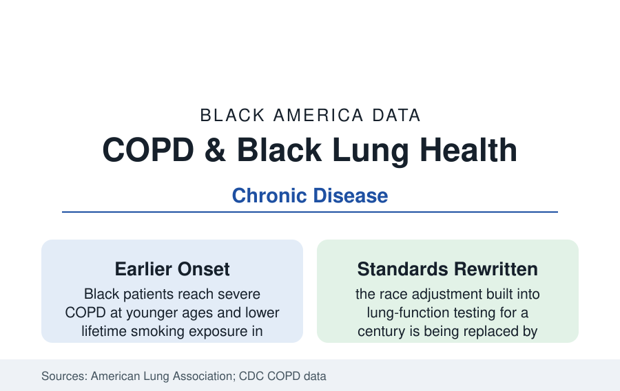

Black Public Health
COPD and Respiratory Health in Black Adults: The Under-Diagnosed Lung File
Black adults develop serious lung disease earlier and are diagnosed later — and the spirometry reference standards themselves are being rewritten. The respiratory data.

Chronic obstructive pulmonary disease — the emphysema and chronic bronchitis complex — kills more than 100,000 Americans a year and disables millions, and its Black data carry two distinctive findings: Black patients reach severe disease younger and at lower lifetime smoking exposure, and the very instrument that diagnoses the disease was calibrated for a century with a race adjustment that systematically read Black lungs as smaller. This article reports the respiratory file.
Prevalence, Severity, and the Mortality Curve
The reported-prevalence data mislead at first glance: diagnosed COPD rates among Black adults run at or slightly below White rates in the CDC surveillance — a finding the clinical literature distrusts, because the spirometry cohort studies (COPDGene, SPIROMICS) find comparable or greater disease burden in Black participants at given exposures, with under-diagnosis (the studies' ratio of airflow obstruction found on testing to prior diagnosis) running worse. The severity data are unambiguous: Black COPD patients are hospitalized younger, record exacerbation rates at the high end, and enter the mortality data with the death rates converging toward the White rates that smoking's history set — Black men's lung-disease mortality rising as the mid-century smoking cohorts age, Black women's the fastest-rising segment across the late twentieth century in the vital statistics. The comorbidity web (the heart failure and diabetes of the earlier profiles) makes the respiratory file a multiplier of the others.
Exposure: Smoking's Pattern and the Occupational Layer
The smoking profile gives the primary exposure: lower lifetime consumption on average, later initiation, menthol's concentration, lower quit success — a pattern that produces severe disease at lower pack-years in the cohort analyses, whether through susceptibility differences the genetics literature explores or exposure measurement's limits. The occupational layer adds the second exposure set: the dusty trades of the employment section (foundry and mill work historically, construction, agriculture, the military's burn-pit era for the veteran cohorts) distribute inhalation injury along the same workforce lines, and the environmental layer (the asthma profile's air-quality geography — diesel corridors, industrial fence lines) compounds it. The biomass and secondhand exposures of childhood (the asthma file's households) set the lung-function trajectory whose adult decline the COPD data record — the life-course model now standard in the literature.
The Spirometry Correction: A Measurement Reckoning
The file's most consequential recent data are about the ruler. Spirometry reference equations long applied a race correction — predicting lower 'normal' lung volumes for Black (and Asian) patients on the basis of population averages whose origins the historians trace to slavery-era anthropometry and whose justification the modern studies dismantled: the correction delayed diagnosis, understating impairment by effectively grading Black patients against a lowered expectation. The American Thoracic Society's recent position and the adoption of race-neutral global equations (the GLI Global standard) reclassify millions of tests in the validation studies — Black patients' measured impairment rising on paper to match the symptoms the clinics recorded — with consequences cascading through disability determinations, occupational clearances, and transplant listing scores that used the old equations. The episode is the health section's measurement parable: a disparity partly manufactured by the instrument, discovered by auditing the instrument.
Treatment and the Access Pattern
The treatment data track the familiar gradient in respiratory specifics: inhaler therapy (whose costs — the maintenance inhalers' prices — stratify adherence in the claims data), pulmonary rehabilitation (among the most effective and least-used therapies in the benefit, with referral and completion data stratifying by the access variables), smoking-cessation pharmacotherapy's under-prescription of the smoking profile, home oxygen and noninvasive ventilation's supplier geography, and lung-transplant listing (Black patients form a small share of recipients against their share of advanced disease in the UNOS data). The exacerbation safety net — the ED and the hospital — carries the under-managed, in the readmission data the hospitals' penalty programs price.
Reading the Respiratory Data
COPD is the quiet file: a top-five killer whose Black story hides inside a prevalence statistic that undercounts it and a diagnostic standard that understated it. The corrected equations will raise the measured burden without changing a single lung — the numbers will finally confess what the patients reported all along — and the health section files the episode as its standing warning about every other table in this reference.
More in Black Public Health
Hypertension Among Black Adults: Prevalence, Control, and Consequences
About 55 percent of Black adults have hypertension — the highest rate of any U.S. group. Prevalence, onset, control, and the stroke, heart, and kidney consequences in the data.
Diabetes Among Black Adults: Prevalence and Complications
Nearly one in five Black adults has diabetes, diagnosed or undiagnosed — and its complications fall with particular weight. The CDC data on prevalence, control, and outcomes.
Black Life Expectancy: The Gap at Birth and Its Causes
Black life expectancy at birth is about 73 years, roughly five years below the national figure — the summary measure of every health gap in this section. The CDC data.
Source: American Lung Association, State of Lung Disease in Diverse Communities; Global Initiative for Chronic Obstructive Lung Disease; NEJM race-correction in spirometry research; CDC COPD surveillance.